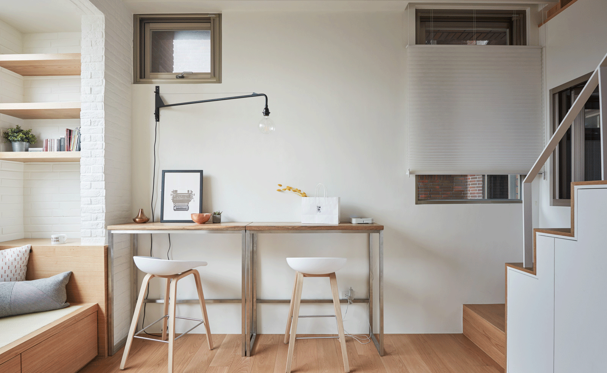
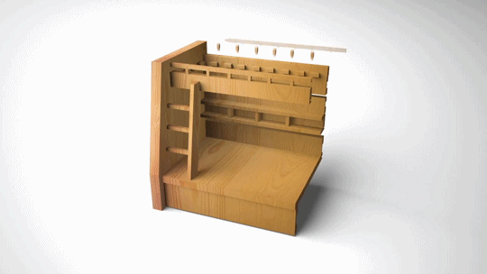

Si tens dubtes de com hauries de decorar el teu cuart de bany, o de cóm tindre la cuina ideal per fer aquells mejars tan bons i que te a tothom li maravellen.
Es per aixó que desde AndMobles proporcionem un servei d'assesorament on els nostres agents de diseny d'interiors proposaran distribucions i estils de llar als que us costarà decidir.
1. Assesorament
Els nostres agents han obtingut la titulació de mestres decoradors d'interiors com a base general. Seguidament hi ha alguns que s'han format en pisos de platja, habitacles de laboratoris, de tota mena.
A vegades amb un petit canvi, l'habitació te una cara totalment diferent

2. Transport, Instal·lació i muntatge a domicili
Som conscients que tots tenim coses a fer i a vegades és difícil trobar temps durant el dia. Facilitem el trajecte de la botiga a casa amb els nostres furgons de transport. Un cop a casa, no marxarem així, us instal·lem i realitzem d'altres retocs si així s'acorda. Tot de franc per agrair la vostra confiança.

No obstant això, sabem que el benestar de les vostres compres és la nostra màxima prioritat per garantir un servei seguir per al producte, segur per als nostres treballadors i segur per la gent que ens envolta.

Des de la sortida de la fàbrica, durant l'empaquetatge i el trajecte, el producte reposa fins al destí. Des de la nostra central de producció controlem tot el recorregut d'un producte nostre. Les fases de producció són revisades calculadament